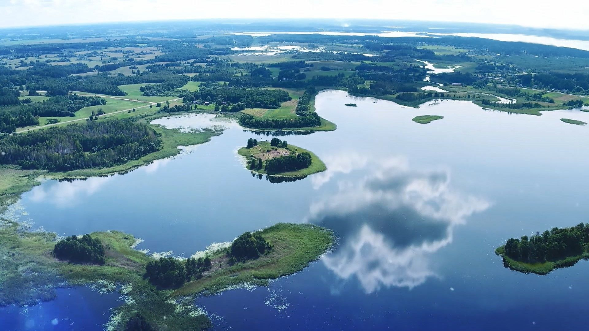
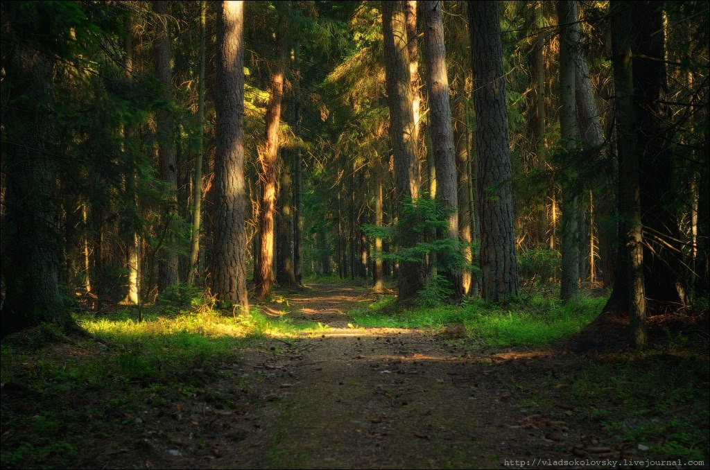
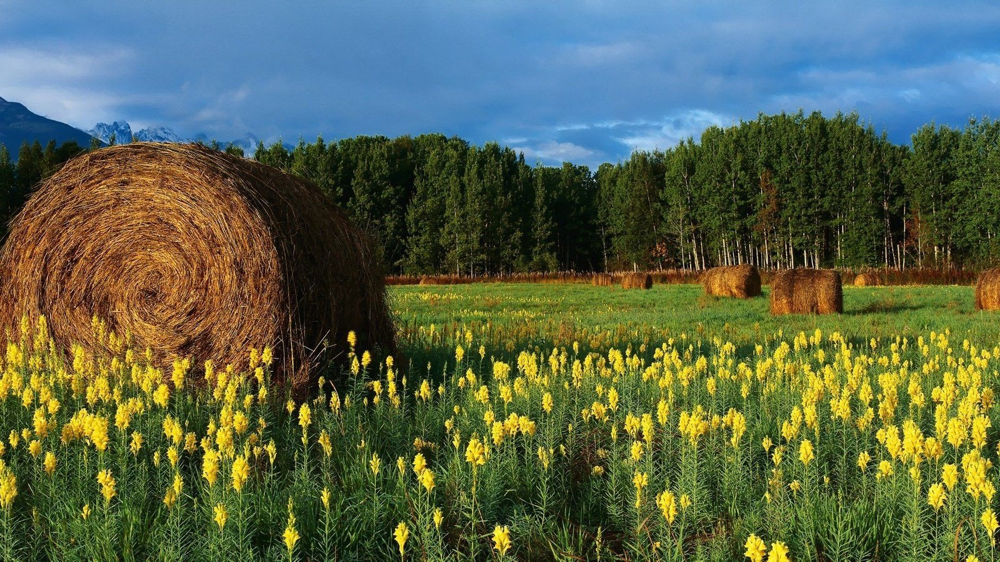
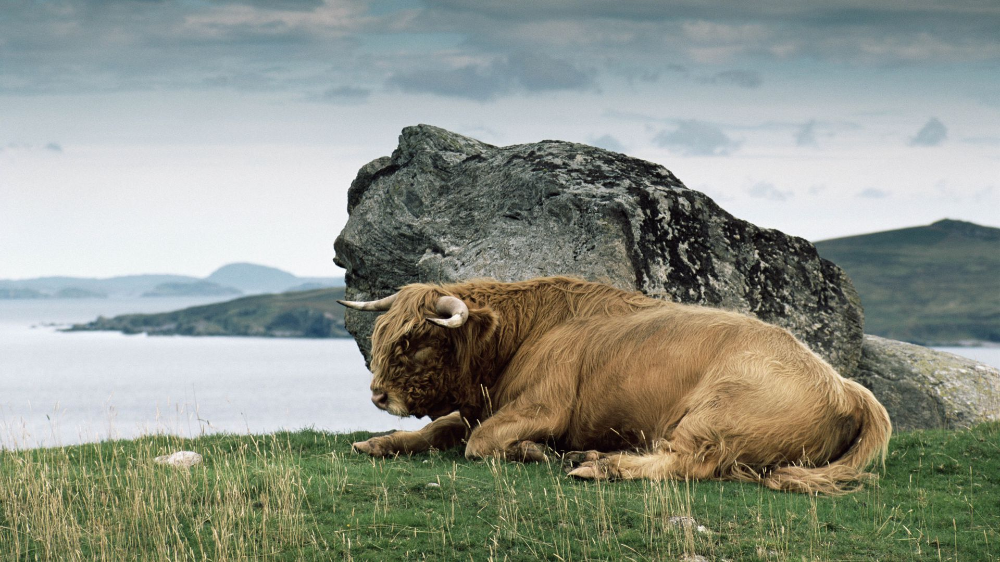

Природа родного края
ОзёраБелоруссию называют страной озёр — в республике их около 11 тысяч. Больше всего озёр на севере и северо-западе, в так называемом Белорусском Поозерье.Подробнее |
 |
|  |
ПущиВ настоящее время в Республике Беларусь работают Березинский биосферный и Полесский государственный радиационно-экологический заповедники. Также действуют четыре национальных парка: Беловежская пуща, Припятский, Браславские озера и Нарочанский. |
ФлораВ современном растительном покрове Белоруссии насчитывается около 1600 высших растений. Среди них выделяют плауны (Lycopodiophyta), хвощи (Equisetopsida), папоротники (Pteridophyta), голосеменные (Gymnospermae), покрытосеменные (Magnoliophyta). Видовое разнообразие включает около 1000 грибов, 350 лишайников, 400 мхов.Подробнее |
 |
|  |
ФаунаНасчитывается 457 видов позвоночных, а также более тридцати тысяч беспозвоночных животныхПодробнее |